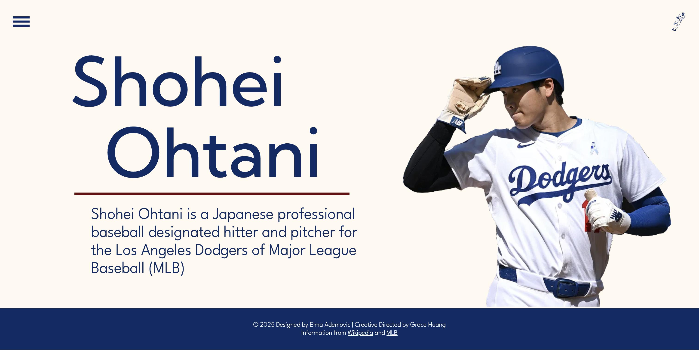

Recipe Page
A responsive recipe page featuring Black Sesame Cookies with interactive checkboxes, detailed timing information, and a clean, modern layout that adapts across devices.
Microsite - Creative Director
Led creative direction for Shohei Ohtani's microsite, collaborating with the designer to develop visual concepts, content strategy, and overall design direction for this multi-page athlete profile.

Microsite - Designer
Designed and developed a comprehensive microsite exploring James Corden's career, featuring responsive navigation, interactive cards, and multiple pages covering his theatre work, filmography, and television achievements.